Educational Outreach
Educational Outreach is the department of NSS, IITB that strives to ensure that every child receives the formal education she or he is entitled to. We at Educational Outreach believe that lack of education is one of the biggest root cause of all existing problems in the society. Also, acknowledging the fact that formal education is not enough for the all-round development of a child, initiatives like Muskaan and Prayog were started to train the students in extra-curricular activities and to develop their scientific temperament respectively. Also, this department has national outreach due to its YouTube channel, Open Learning Initiative. Voice for Purpose is another online initiative wherein books, travel diaries and current affairs news are recorded as audio books for the blind students. With a new initiative - Neem Schools for this year, which focuses on value education as the most important aspect of education, this department is constantly trying to make overall learning more fun, interesting and enriching. From the mess workers of the institute to the children of remote parts of India, the beneficiaries of this department are varied and large in number.
Initiatives:
OLI is a You Tube channel that was launched by NSS, IITB to ensure that language does not become a barrier in education. With educational videos recorded by our volunteers (mostly UG students in their first, second or third years) in regional languages, we aim to make the Internet equally useful for students who don’t study in English medium schools. Currently, the channel contains 250+ educational videos on Science and Mathematics in eight Indian languages, namely, Hindi, Marathi, Gujarati, Bengali, Odia, Malayalam, Tamil, and Telugu. There is also a course on English to benefit the students and a section on scientific experiments, wherein interesting and informative experiments are demonstrated to enhance the interest of the students in science and to promote scientific temperament and another section on fun facts and interesting concepts(Edutainment).
Link:http://youtube.com/c/OLINSSIITB
Ideation:The idea of launching this YouTube channel was born out of a discussion with a nearby NGO, Vidya. They were on the lookout for educational videos in Hindi and Marathi. They had AV facilities and hence they could have shown those videos to students in the absence of teachers. However, thorough search on the internet did not produce satisfactory results and most of the good videos were in English. That's when we thought of starting our own YouTube channel.

Outreach:
The growth of OLI has been exponential in the last year. Starting from 300 subscribers, OLI has grown to about 50k subscribers and 4.2 million+ views. Many NGOs in Powai like Vidya, Asha, Logic Center and Community Welfare Association (LCCWA) etc. are using our videos for teaching their students. LCCWA has regular OLI sessions for students on Tuesdays and Thursdays. Many people from other parts of the nation have also been availing our resources.This is what Diwakaran sir from LCCWA had to say about OLI:
OLI is a fantastic tool for learning Math specially for 8th std students. As it is in Hindi language and is for the vernacular medium, it is very easy for them to understand the concepts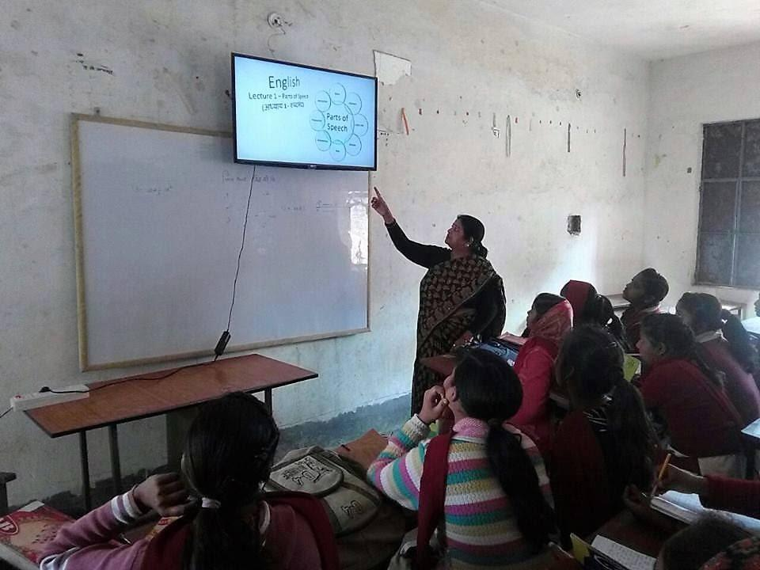
Long-term goals:
- Cover all the major regional languages of India
- Reach out to as many NGOs as possible
- Cover all the basic topics in Science and Math and also other subjects
- Train the students in English and make them proficient in the language so that they don't face any problems in their higher studies and professional life
- Make learning fun and interesting

About: Teaching can be considered as the foundation stone of Educational Outreach. Our volunteers visit various NGOs in and around the campus to teach the students enrolled there.
Outreach: The NGOs currently involved with us are Vidya (having 5 centers), Asha, Logic Center and Community Welfare Association (LCCWA) and Computer Literacy Program (CLP) with 8 centers in all. A total of more than 70 volunteers taught more than 300 students in these centers. A continuous assessment program was carried out in NGOs by the implementation of log books to keep a record of every student’s academic growth. The teaching program was carried out in summer and winter vacations also with the aid of non-freshmen volunteers. 2 NGOs were functional with 20+ volunteers teaching a variety of subjects.
The way forward: We plan to extend our volunteering to more NGOs in near future (distance of the NGO from the campus is a major constraint in this direction). Strengthening the ties between NGOs and NSS will also be focused on by helping out the NGOs with planning their summer camps and youth fests successfully.


About: Muskaan was started with the aim of training children in cultural activities like dance and fine arts thus, contributing towards their all-round development. This year we incorporated a well-defined curriculum in all genres to ensure a robust learning experience. Quilling, origami, cotton-painting and blow-painting were some of the fine arts activities while bolly-hop and hip-hop were the major dance forms taught in the last year. Their efforts were showcased through a dance performance for All NSS Meet and through a fine arts submission for Kaladarshan 2018. Muskaan sessions are held every Sunday. We also had non-freshmen volunteers participating in this initiative over the course of two semesters.
Outreach: Over 100 students from 3 NGOs benefited from Muskaan
The Way Forward: It has been planned to expand Muskaan to music and literary arts. Also, we aim at reaching out to more NGOs in near future. Better collaboration with the Institute Cultural Council and hence increased productivity in genres like Dramatics will be sought for.
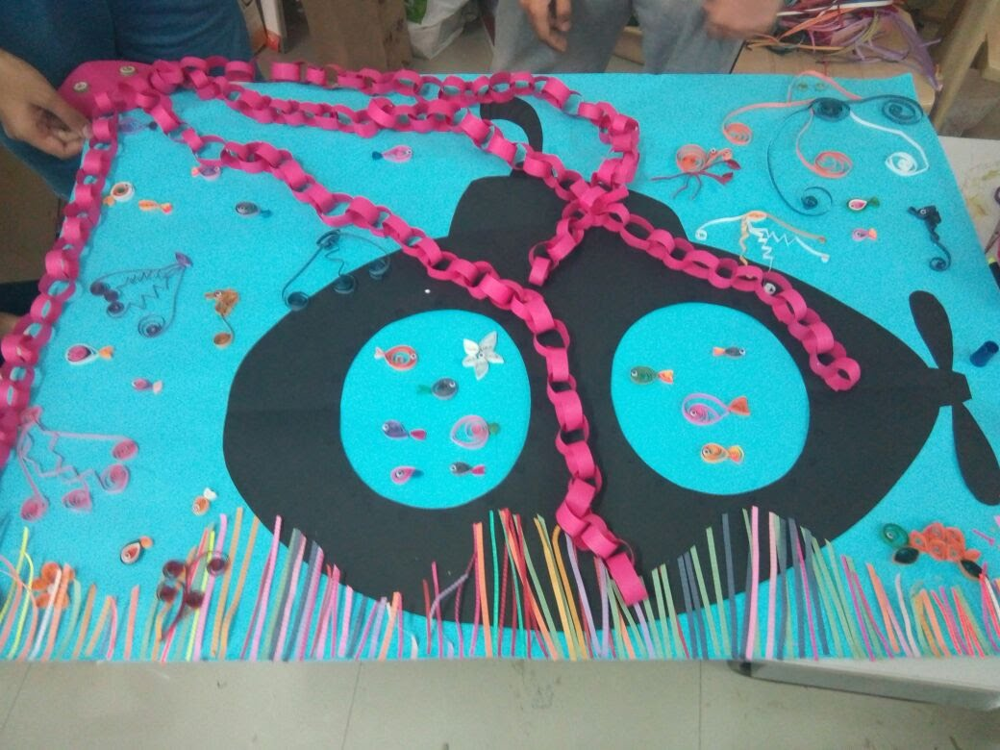

It vexes me when they would constrain science by the authority of the Scriptures, and yet do not consider themselves bound to answer reason and experiment.– Galileo Galilei
Prayog was started with a belief that science is better understood by demonstration. Our aim is to instill scientific temperament among the students by the means of simple, yet interesting and informative scientific experiments. The students get a chance to perform the experiments themselves after the demonstration. Also, care is taken to ensure that the experiments are performed with readily available apparatus so that the students can easily replicate them when they go home. All the experiments are followed by an explanation of the scientific principles on which the experiment is based. We included mental ability section this time with quizzes and puzzles and fun activities. This year the students were also taken to various technical exhibitions inside the IIT campus to ignite their curiosity and inspire them towards science.
Outreach: Over 100 students from 3 NGOs benefited from Prayog
The Way Forward: We are trying to expand the experiment section on OLI channel by recording more Prayog experiments. Also, efforts are being made to introduce easily doable projects in Prayog. Experiment reports will also be incorporated shortly. Regular sessions will continue as before.


About the initiative: Voice for Purpose is an initiative aimed at providing quality audiobooks for the visually impaired community via our YouTube channel which has increased the accessibility of these audiobooks and facilitate their distribution. We are currently focusing on providing literature ( both Hindi and English), and have launched new genres like Travel Diaries ( to provide picturesque descriptions of places which the visually impaired cannot see themselves) and Current Affairs ( with the aim to provide information about the world affairs). We also conducted a blind school visit where we had fun interaction with the kids. Requirements given by the blind school are being worked on.
Link: https://www.youtube.com/channel/UC2iPnxGyKViqjV37f3r6uJwThe Way Forward: The channel currently hosts 70+ audio recordings, has 200+ subscribers and 16k+ views. We plan on reaching out to blind foundations and schools and provide requested content. Also, we plan on expanding our existing playlists with simultaneous creation of new ones.
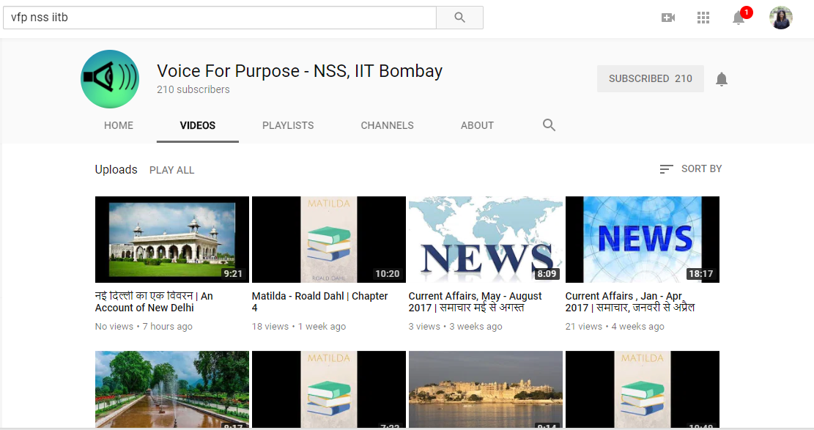
Anyone who stops learning is old, whether at twenty or eighty. Anyone who keeps learning stays young.– Henry Ford
This program was started on the request of security guards to teach them the basics of English. We have come a long way since then and ALP has been extended to mess workers. We have even expanded the curriculum to make it more relatable to the workers’ needs. We now have included basic mathematics and basic knowledge (going cashless, how to fill forms etc ) for the benefit of the workers. Currently, mess workers and PHO workers in Hostels – 2, 3, 6, 7, 8, 9, 10 are benefiting from this program. We distributed dictionaries and notebooks to the mess workers to facilitate their learning process. We have been receiving a very positive response for the program and the workers have shown commendable enthusiasm towards learning
Outreach: Currently, 50+ mess workers from 7 hostels are a part of this program.
The Way Forward: We plan on structuring ALP by making more robust and thorough teaching modules which will be modified with time. Also, expanding ALP to the rest of the hostels and possibly to construction workers will be the next move.

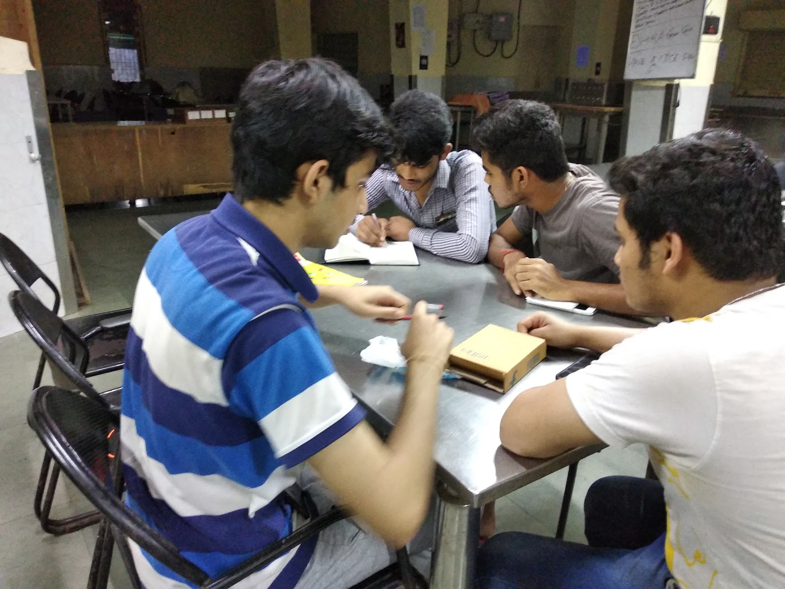
Educating the mind without educating the heart is no education at all.- Aristotle
While most schools do serve their purpose by educating the kids, somehow Value Education is something that is missed out. We were introduced to this idea by WhiteSwan Neem School foundation, a Delhi based organisation, who wanted to start neem schools in Mumbai. After proper induction and training, we took this initiative up. Currently we are functioning in Gokhale Nagar Maidan (opposite IIT Main Gate) and have 40+ children from around the slums attending these Sunday morning sessions. Every session starts with a prayer, followed by instructions for proper hygiene maintenance which then is followed by the session on moral value of the day. Interesting stories and interactive activities are used to get the moral message to the kids and at last the session ends with a prayer. Many a times parents of the kids come by to see the sessions progressing and give feedback to improve the sessions.
The Way Forward: Expanding the Neem Schools to Phulenagar slum area ( to the left of Y Point gate) and starting these sessions in collaboration with NGOs operating in the areas will be the next step for Neem Schools.


 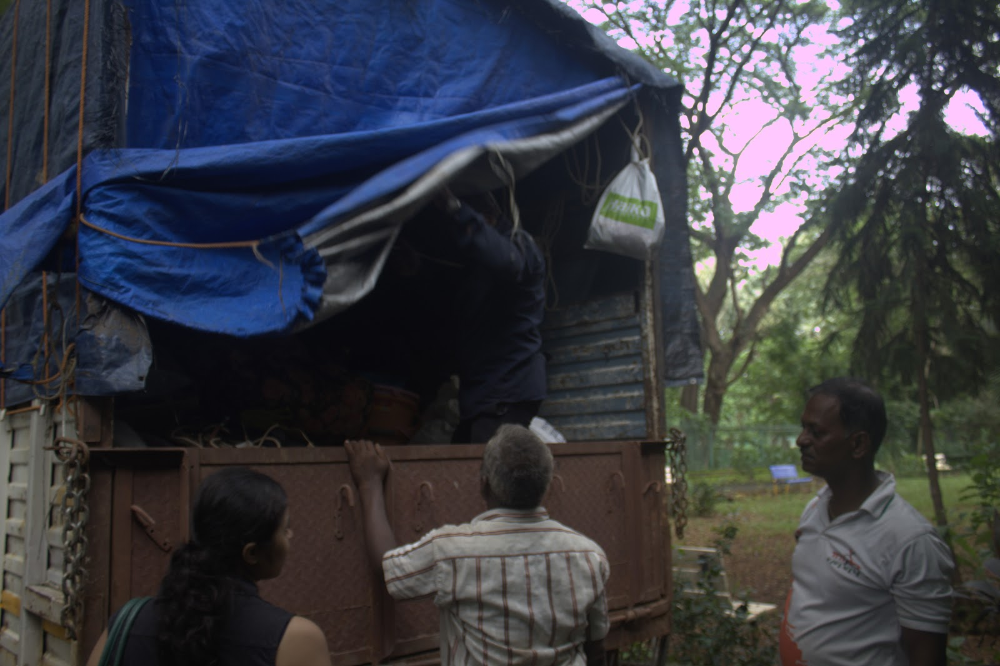
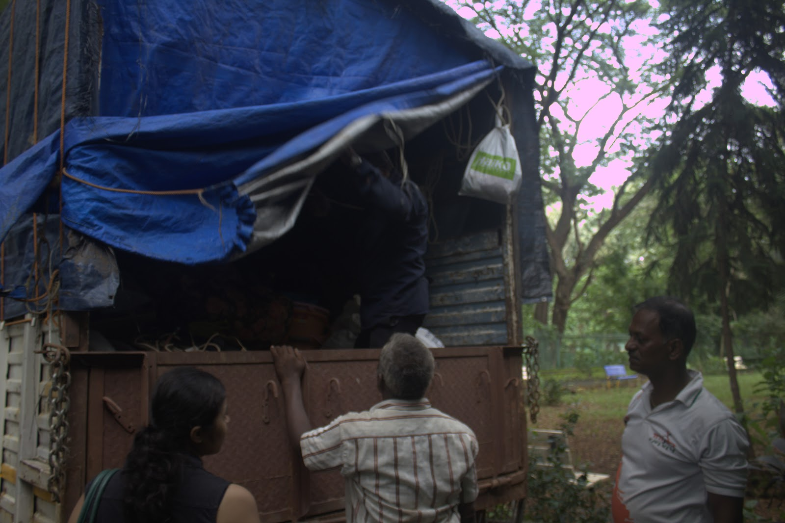


 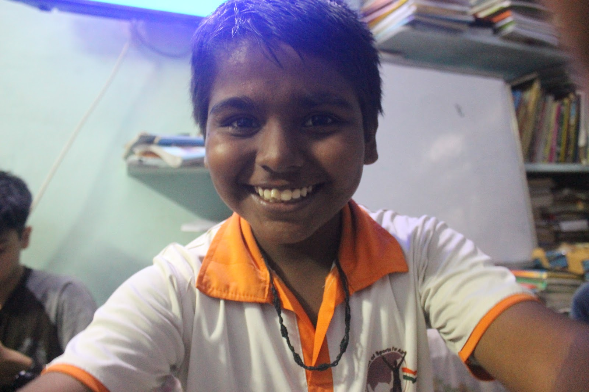
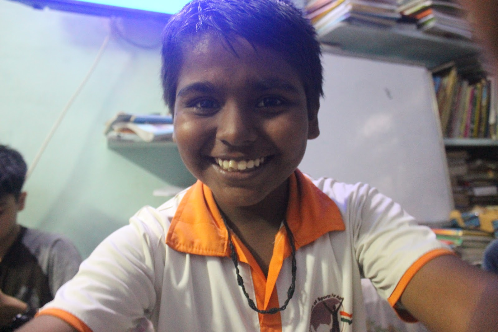


 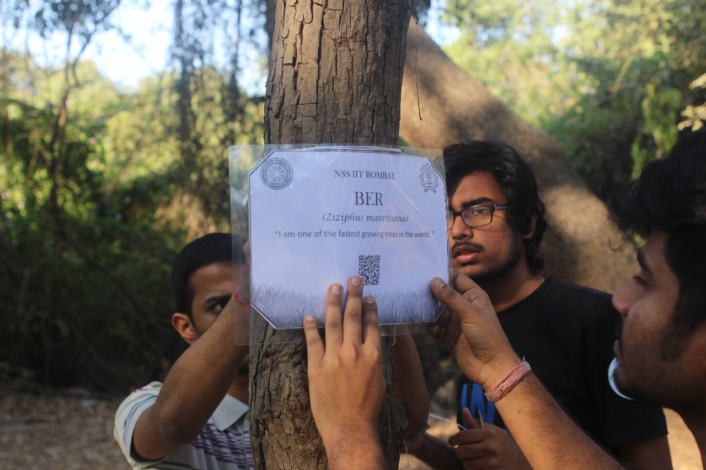
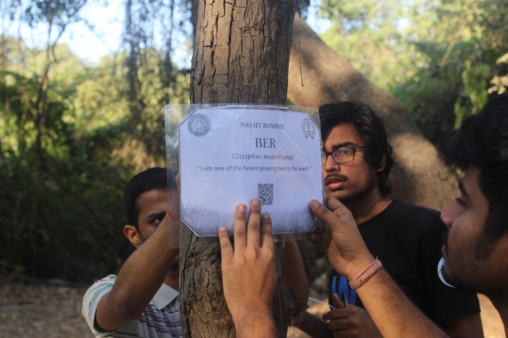


 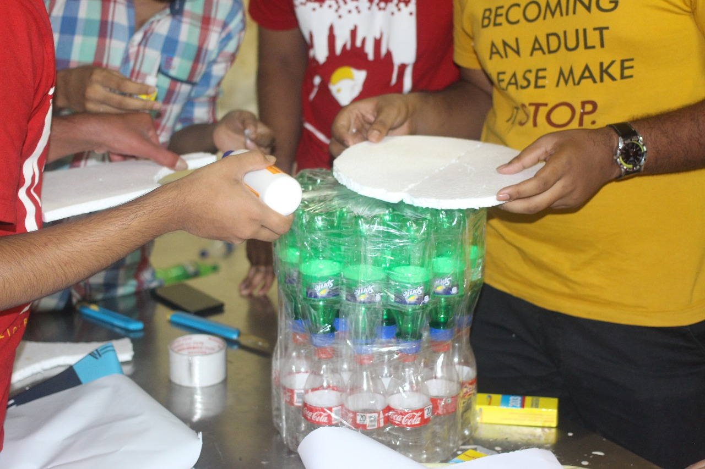
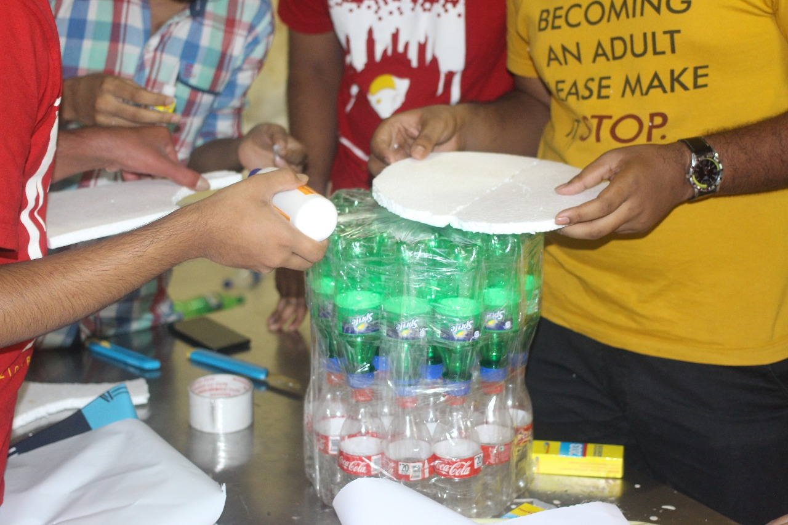